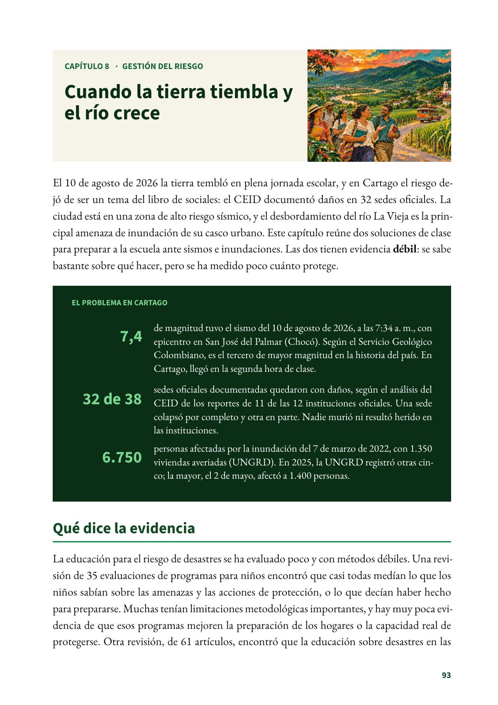
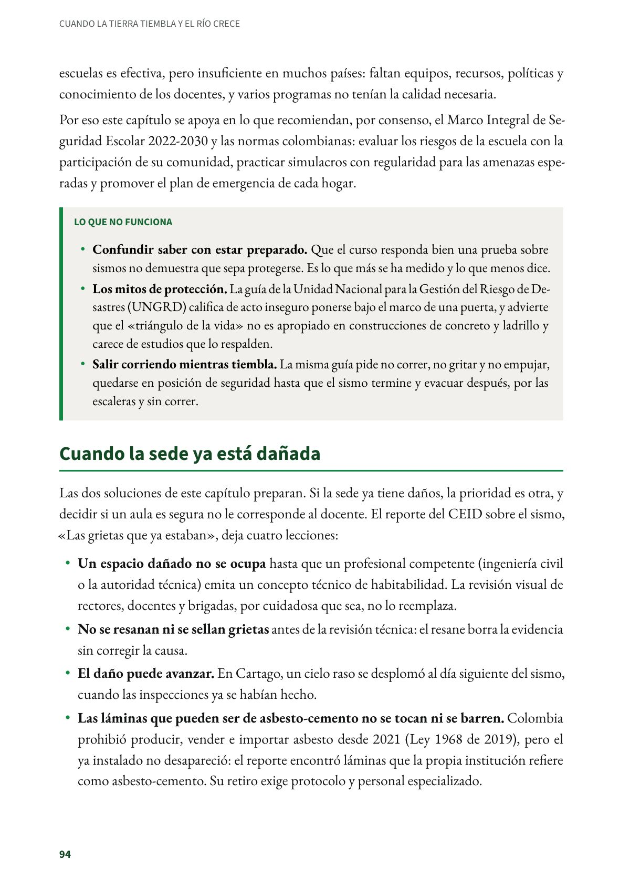

Cuando la tierra tiembla y el río crece
El 10 de agosto de 2026 la tierra tembló en plena jornada escolar, y en Cartago el riesgo dejó de ser un tema del libro de sociales.
PDF · 3 págs. · 1,3 MBEl 10 de agosto de 2026 la tierra tembló en plena jornada escolar, y en Cartago el riesgo dejó de ser un tema del libro de sociales: el CEID documentó daños en 32 sedes oficiales. La ciudad está en una zona de alto riesgo sísmico, y el desbordamiento del río La Vieja es la principal amenaza de inundación de su casco urbano. Este capítulo reúne dos soluciones de clase para preparar a la escuela ante sismos e inundaciones. Las dos tienen evidencia débil: se sabe bastante sobre qué hacer, pero se ha medido poco cuánto protege.
El problema en Cartago
- 7,4 de magnitud tuvo el sismo del 10 de agosto de 2026, a las 7:34 a. m., con epicentro en San José del Palmar (Chocó). Según el Servicio Geológico Colombiano, es el tercero de mayor magnitud en la historia del país. En Cartago, llegó en la segunda hora de clase.
- 32 de 38 sedes oficiales documentadas quedaron con daños, según el análisis del CEID de los reportes de 11 de las 12 instituciones oficiales. Una sede colapsó por completo y otra en parte. Nadie murió ni resultó herido en las instituciones.
- 6.750 personas afectadas por la inundación del 7 de marzo de 2022, con 1.350 viviendas averiadas (UNGRD). En 2025, la UNGRD registró otras cinco; la mayor, el 2 de mayo, afectó a 1.400 personas.
Qué dice la evidencia
La educación para el riesgo de desastres se ha evaluado poco y con métodos débiles. Una revisión de 35 evaluaciones de programas para niños encontró que casi todas medían lo que los niños sabían sobre las amenazas y las acciones de protección, o lo que decían haber hecho para prepararse. Muchas tenían limitaciones metodológicas importantes, y hay muy poca evidencia de que esos programas mejoren la preparación de los hogares o la capacidad real de protegerse. Otra revisión, de 61 artículos, encontró que la educación sobre desastres en las escuelas es efectiva, pero insuficiente en muchos países: faltan equipos, recursos, políticas y conocimiento de los docentes, y varios programas no tenían la calidad necesaria.
Por eso este capítulo se apoya en lo que recomiendan, por consenso, el Marco Integral de Seguridad Escolar 2022-2030 y las normas colombianas: evaluar los riesgos de la escuela con la participación de su comunidad, practicar simulacros con regularidad para las amenazas esperadas y promover el plan de emergencia de cada hogar.
Lo que no funciona
- Confundir saber con estar preparado. Que el curso responda bien una prueba sobre sismos no demuestra que sepa protegerse. Es lo que más se ha medido y lo que menos dice.
- Los mitos de protección. La guía de la Unidad Nacional para la Gestión del Riesgo de Desastres (UNGRD) califica de acto inseguro ponerse bajo el marco de una puerta, y advierte que el «triángulo de la vida» no es apropiado en construcciones de concreto y ladrillo y carece de estudios que lo respalden.
- Salir corriendo mientras tiembla. La misma guía pide no correr, no gritar y no empujar, quedarse en posición de seguridad hasta que el sismo termine y evacuar después, por las escaleras y sin correr.
Cuando la sede ya está dañada
Las dos soluciones de este capítulo preparan. Si la sede ya tiene daños, la prioridad es otra, y decidir si un aula es segura no le corresponde al docente. El reporte del CEID sobre el sismo, «Las grietas que ya estaban», deja cuatro lecciones:
- Un espacio dañado no se ocupa hasta que un profesional competente (ingeniería civil o la autoridad técnica) emita un concepto técnico de habitabilidad. La revisión visual de rectores, docentes y brigadas, por cuidadosa que sea, no lo reemplaza.
- No se resanan ni se sellan grietas antes de la revisión técnica: el resane borra la evidencia sin corregir la causa.
- El daño puede avanzar. En Cartago, un cielo raso se desplomó al día siguiente del sismo, cuando las inspecciones ya se habían hecho.
- Las láminas que pueden ser de asbesto-cemento no se tocan ni se barren. Colombia prohibió producir, vender e importar asbesto desde 2021 (Ley 1968 de 2019), pero el ya instalado no desapareció: el reporte encontró láminas que la propia institución refiere como asbesto-cemento. Su retiro exige protocolo y personal especializado.
La emergencia la gestiona el comité institucional de gestión del riesgo escolar, que preside el rector. Según la Circular 19 de 2022 del Ministerio de Educación, ese comité lidera el plan de la institución y el diagnóstico de sus riesgos, y reporta sus emergencias a la mesa territorial de gestión integral del riesgo escolar, que lidera la Secretaría de Educación.
Fuentes del capítulo
Fuentes
Alcaldía de Cartago. (2024). Diagnóstico sectorial. Plan de Desarrollo Territorial 2024-2027 «Más progreso, mejor futuro» (p. 275, amenaza sísmica). 2025.cartago.gov.co
Centro de Estudios e Investigaciones Docentes Cartago. (2026a). Las grietas que ya estaban: afectaciones del sismo del 10 de agosto de 2026 en la infraestructura educativa oficial de Cartago. Subdirectiva SUTEV Cartago. ceidcartago.com
Centro de Estudios e Investigaciones Docentes Cartago. (2026b). Sedes educativas de Cartago frente al sismo, el calor y la inundación (2026) (Investigaciones del CEID, n.º 2). Subdirectiva SUTEV Cartago. doi.org
Congreso de la República de Colombia. (2019). Ley 1968 de 2019, por el cual se prohíbe el uso de asbesto en el territorio nacional. secretariasenado.gov.co
Global Alliance for Disaster Risk Reduction and Resilience in the Education Sector. (2022). Marco Integral de Seguridad Escolar 2022-2030: por los derechos de la niñez y la resiliencia en el sector de la educación. gadrrres.net
Johnson, V. A., Ronan, K. R., Johnston, D. M. y Peace, R. (2014). Evaluations of disaster education programs for children: A methodological review. International Journal of Disaster Risk Reduction, 9, 107–123. doi.org
Ministerio de Educación Nacional. (2022). Circular 19: orientaciones para la gestión integral del riesgo escolar (25 de julio). mineducacion.gov.co
Seddighi, H., Sajjadi, H., Yousefzadeh, S., López López, M., Vameghi, M., Rafiey, H. y Khankeh, H. (2022). School-based education programs for preparing children for natural hazards: A systematic review. Disaster Medicine and Public Health Preparedness, 16(3), 1229–1241. doi.org
Servicio Geológico Colombiano. (2026a, 10 de agosto). Servicio Geológico Colombiano actualiza la información sobre el sismo ocurrido en San José del Palmar, Chocó. www2.sgc.gov.co
Servicio Geológico Colombiano. (2026b, 14 de agosto). Sismo de magnitud 7,4: el SGC resolvió las preguntas más frecuentes para entender el evento. www2.sgc.gov.co
Unidad Nacional para la Gestión del Riesgo de Desastres. (2024). Guía de preparativos ante sismo. portal.gestiondelriesgo.gov.co
Unidad Nacional para la Gestión del Riesgo de Desastres. (2026). Emergencias UNGRD (2019-2022) y Emergencias UNGRD V2 (2025 en adelante) [Conjuntos de datos]. Datos Abiertos Colombia. datos.gov.co y datos.gov.co
Así se ve en el libro
3 páginas
